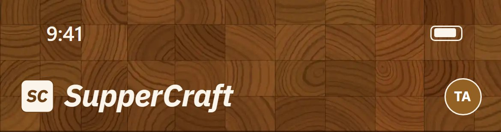
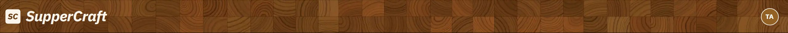
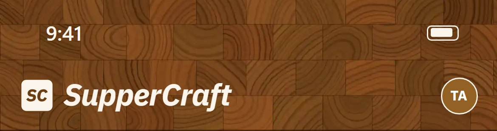
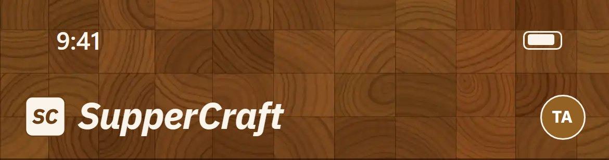

Header bar: the pick
11-27 17:30. 8 rounds, 176 variants, 4 outside grading panels. Everything is a mock-up: nothing in the app has changed yet.
Pick 1: N-r8-01
A warm end-grain board with rings that look grown, not drawn, and a few honey blocks. It has the SC mark, a bolder "SupperCraft" and your account on the right. The bar is the same 56 height on every page and device. Cream words read at 5:1 or better everywhere on the bar.


Before and after, top 3, every round 7-8 board (phone) On desktop: 1280, 820, 1180 kitchen iPad, 1920, 2560Picks 2 and 3
N-r8-02: the same wood with the rows shifted half a block. Looks most natural on wide screens, a bit like brick on a phone.

N-r8-03: quieter rings. Calmest and lightest file, a little flatter.

Score trend (outside panel, out of 10)
| Round | Best board | Look | Fit + reading | Brand + ease |
|---|---|---|---|---|
| 3 | A / B lanes | 7 | 7 | 7 |
| 6 | M-r6-01 | 7 | 8 | 8 |
| 8 | N-r8-01 | 8 | 8 | 8 |
File weight: today's board is 300 KB. The new one is 15-61 KB on web (one file, picked by screen) and 113 KB in the iPhone/iPad app.
Questions for you (my pick first)
- Which board? Pick: N-r8-01. It's the warmest and most like a real board.
- One board everywhere, or a few that change by day? Pick: one board. It matches "always the same background".
- "SupperCraft" bold at 24 (today: semibold 22) and a 56 bar (today: 50)? Pick: yes to both. The name reads more clearly, and the bar fits exactly two rows of blocks.
- The SC mark left of the name? Pick: yes, the same tile as the app icon. Trade-off: it's the brightest thing on the bar.
- Anything else on the bar (search, quick add, household)? Pick: no. Keep the mark, the name, your account, and the saving/timer signs.
- Cook screen: keep its tan band with no brown bar? Pick: yes (Cook is full screen on purpose).
- Kitchen iPad at rest: add the bar? Pick: yes (you said every page).